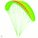
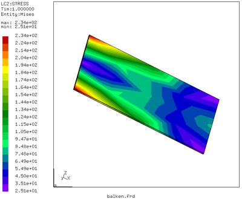

Calculix
Dieser Artikel wurde für die folgenden Ubuntu-Versionen getestet:
Ubuntu 16.04 Xenial Xerus
Zum Verständnis dieses Artikels sind folgende Seiten hilfreich:

CalculiX  ist ein freies und quelloffenes Finite-Elemente-Programm zur Simulation von Strukturmechanik. FE-Berechnungen werden unter anderem im Ingenieurswesen eingesetzt, um partielle Differentialgleichungen auf komplexen Geometrien numerisch zu lösen (z. B. eine Karosserie im Automobilbereich). CalculiX teilt sich hierbei in den Solver ccx (CalculiX CrunchiX) und den Prä- und Postprozessor cgx (CalculiX GraphiX) auf. Mit dem Präprozessor werden Geometrien aus CAD-Programmen eingelesen und durch Vernetzen in ein mathematisches Modell umgewandelt. Diese werden dann mit dem Solver gelöst und anschließend wieder mit dem Postprozessor analysiert. CalculiX verwendet zu großen Teilen das proprietäre Abaqus-Eingabeformat. Daher lassen sich zahlreiche andere Prä- und Postprozessoren nutzen. Die Berechnungen stehen jedoch in keiner Verbindung zu Abaqus.
ist ein freies und quelloffenes Finite-Elemente-Programm zur Simulation von Strukturmechanik. FE-Berechnungen werden unter anderem im Ingenieurswesen eingesetzt, um partielle Differentialgleichungen auf komplexen Geometrien numerisch zu lösen (z. B. eine Karosserie im Automobilbereich). CalculiX teilt sich hierbei in den Solver ccx (CalculiX CrunchiX) und den Prä- und Postprozessor cgx (CalculiX GraphiX) auf. Mit dem Präprozessor werden Geometrien aus CAD-Programmen eingelesen und durch Vernetzen in ein mathematisches Modell umgewandelt. Diese werden dann mit dem Solver gelöst und anschließend wieder mit dem Postprozessor analysiert. CalculiX verwendet zu großen Teilen das proprietäre Abaqus-Eingabeformat. Daher lassen sich zahlreiche andere Prä- und Postprozessoren nutzen. Die Berechnungen stehen jedoch in keiner Verbindung zu Abaqus.
CalculiX ist unter GPL 2.0  lizensiert.
lizensiert.
Installation¶
Ab Ubuntu 16.04 ist nur der Solver ccx in den offiziellen Paketquellen. Ab Ubuntu 16.10 kann CalculiX vollständig aus den offiziellen Paketquellen installiert werden: [2]
calculix-ccx (universe)
calculix-cgx (universe)
 mit apturl
mit apturl
Paketliste zum Kopieren:
sudo apt-get install calculix-ccx calculix-cgx
sudo aptitude install calculix-ccx calculix-cgx
Die Testdateien und die Dokumentation von ccx sowie die Beispieldateien von cgx sind in zusätzliche Pakete ausgelagert:
calculix-ccx-test (universe)
calculix-ccx-doc (universe)
calculix-cgx-examples (universe)
mit apturl
Paketliste zum Kopieren:
sudo apt-get install calculix-ccx-test calculix-ccx-doc calculix-cgx-examples
sudo aptitude install calculix-ccx-test calculix-ccx-doc calculix-cgx-examples
Manuell¶
Steht CalculiX nicht in einer Paketquelle zur Verfügung oder möchte man eine aktuellere Version des Programms einsetzen, dann können auf der Downloadseite des Projekts vorkompilierte, ausführbare Dateien („a Linux executable“) von cgx und ccx für 64-Bit-Systeme heruntergeladen werden.
Hinweis!
Zusätzliche Fremdquellen können das System gefährden.
Die heruntergeladenen Archive müssen entpackt und die entpackten Dateien ausfühbar gemacht werden.
Für ccx muss dann zusätzlich folgendes Paket installiert werden:
libgfortran3 (main)
mit apturl
Paketliste zum Kopieren:
sudo apt-get install libgfortran3
sudo aptitude install libgfortran3
Und für den vollen Funktionsumfang von cgx werden folgende Pakete empfohlen:
imagemagick (main)
psutils (universe)
gv (universe)
gnuplot (universe)
netgen (universe)
mit apturl
Paketliste zum Kopieren:
sudo apt-get install imagemagick psutils gv gnuplot netgen
sudo aptitude install imagemagick psutils gv gnuplot netgen
Im Terminal [3] wechselt man in das Verzeichnis, in dem die beiden ausführbaren Dateien liegen, und kann dort beide direkt aufrufen:
./cgx_VERSION ./ccx_VERSION
Benutzung¶
Prä-/Postprozessor cgx¶
Um mit cgx eine neue Eingabedatei erzeugen zu können, muss cgx im Build-Modus durch Eingabe folgenden Befehls im Terminal [3] gestartet werden:
cgx -b dummy.fbd
Dabei öffnet sich ein neues Fenster. Dieses Fenster sollte sich immer im Vordergrund befinden, da von cgx die Befehle sonst nicht akzeptiert werden. Um mit der Eingabe von Punkten zu beginnen, eignet sich der Befehl pnt:
pnt p1 0 0 0 pnt p2 100 0 0
Hierbei handelt es sich um den Punkt p1 mit den x,y und z Koordinaten gleich 0, sowie p2 (100|0|0). Meist ist jetzt noch nichts zu sehen. Um den Plot auf den Bildschirmbereich einzupassen, klickt man in das linke freie Feld  des Fensters und wählt "Frame". Jetzt sollte ein Punkt in der Mitte des Anzeigefensters zu sehen sein. Mit dem Befehl:
des Fensters und wählt "Frame". Jetzt sollte ein Punkt in der Mitte des Anzeigefensters zu sehen sein. Mit dem Befehl:
plot pa all
zeigt cgx zusätzlich die Punktnummern an. Mit dem Befehl:
qlin
lässt sich eine Linie zwischen beiden Punkten erzeugen. Dazu fährt man mit dem Mauszeiger in das Plotfeld und drückt
R ; nachdem man die Maus ein klein wenig bewegt hat, drückt man erneut
R . Nun sollte statt des Mauszeigers ein Rechteck erscheinen. Dessen Größe lässt sich beliebig durch Drücken von
R ändern. Um nun eine Linie erzeugen zu können, muss sich der p1 innerhalb des Rechtecks befinden. Durch Drücken der
B Taste legt man den Anfang der Linie fest. Jetzt fährt man mit dem Mauszeiger zu Punkt p2 und drückt
G für generate. Um die Eingabe zu beenden, ist ein
Q vonnöten. Nach Eingabe von:
plus la all
sollte die Linie L001 erscheinen. Die Linie lässt sich zu einem Rechteck erweitern, welches man vernetzen kann. Dazu muss man die Linie zu einem Set hinzufügen:
qadd set1
Wieder kann man hier mit der R -Taste ein Rechteck erzeugen. Um die Linie hinzufügen zu können, muss sich der Name der Linie im Rechteck befinden. Durch Drücken von L wird die Linie dem set1 hinzugefügt. Die Eingabe wird wieder mit Q beendet. Jetzt kann die Linie zu einem Rechteck erweitert werden:
swep set1 set2 tra 0 0 50
Mit:
plus sa all
wird die Fläche A001 sichtbar. Diese lässt sich jetzt vernetzen. Als Element wird ein 8-knotiges Plattenelement (qu8) verwendet:
elty all qu8 mesh all plot m all
Nun färbt sich der Quader grau. Um das Netz sehen zu können, klickt man in das linke freie Feld und wählt "Viewing" → "LINES". Nun sollte das vernetzte Rechteck sichtbar sein.
Nun wird ein Punkteset erzeugt, welches später die Einspannung sein soll:
plot na all qadd boundary
Durch Drücken von A lassen sich mehrere Punkte dem Set hinzufügen. Um die richtige Seite sehen zu können, wählt man "Orientation" → "-y-view". Mit R erzeugt man wieder ein Rechteck, in welches alle unteren Punkte passen und drückt N für Nodes:
plus n boundary y
Verlassen wird der Befehl wieder mit Q . Nun kann das Netz abgespeichert werden und die Eingabedatei für den Solver erstellt werden.
send all abq # Erstellt die Knoten- und Elementdatei 'all.msh' send boundary abq nam # Erstellt die Knotendatei für die Einspannung 'boundary.nam'
Nun kann cgx beendet werden.
Solver ccx¶
Anschließend wird im selben Verzeichnis mit den Dateien all.msh und boundary.nam eine Datei balken.inp mit einem Texteditor [4] erstellt.
**Einbinden der Netz- und Lagerdateien *include, input=all.msh *include, input=boundary.nam **Festlegung des Materials *MATERIAL, NAME=Al *ELASTIC 70000,0.3 **Beschreibung der Plattenelemente und Festlegung der Dicke *SHELL SECTION, MATERIAL=Al, ELSET=Eall 1 **Freiheitsgrade der Einspannung *BOUNDARY Nboundary,1,6 *STEP *STATIC **Lastaufbringung *CLOAD 4, 3, -1000 *NODE PRINT,NSET=Nall U *EL PRINT,ELSET=Eall S E *NODE FILE, output=3D u rf *EL FILE S, E *END STEP
Diese erstellte Datei wird im Terminal mit ccx aufgerufen, allerdings ohne die Dateiendung, da ccx sonst die Datei nicht findet.

ccx balken
Nach einer kurzen Berechnungszeit ist im Arbeitsverzeichnis eine Datei balken.frd entstanden.
cgx balken.frd
Durch Auswahl von "Datasets" → "Stress" und "Datasets" → "-Entity-" → "Mises" wird die Mises-Vergleichsspannung dargestellt.
Geometrien aus externen Vernetzern¶
Da das Zeichnen der Geometrien in CalculiX eher umständlich ist, kann es sinnvoller sein die Zeichnungen mit einem externen Programm zu erzeugen (z.B. PTC_Creo_Elements/Pro) und diese dann einzulesen. CalculiX versteht hierbei leider nur das Format STL, welches aber einen Kompromiss darstellt, da die Geometrien mithilfe von Dreiecken beschrieben werden und somit Rundungen nicht dargestellt werden. Besser ist hier auf einen externen Vernetzer wie gmsh (gmsh (universe)) oder netgen (netgen (universe)) zurückzugreifen.

- Erstellt mit Inyoka
-
 2004 – 2017 ubuntuusers.de • Einige Rechte vorbehalten
2004 – 2017 ubuntuusers.de • Einige Rechte vorbehalten
Lizenz • Kontakt • Datenschutz • Impressum • Serverstatus -
Serverhousing gespendet von